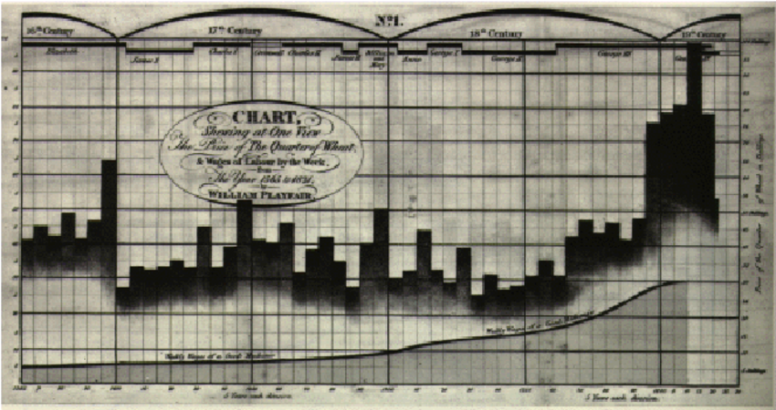
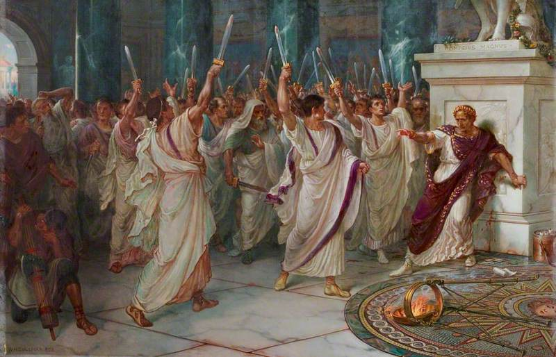

Void@linux-desktop:/void.html/Decryption.html
noitpyrceD
This page contains different encrypted messages. The task is to decrypt them and follow the instructions in the plaintext, when solved. You should remember that this is a tricky site, and our main goal is to expand the curiosity level of our readers. In that case, there may be tips hidden in the websi... wait, Daniel, can we say that? Well... anyway, you can interpret that as you want. There will also be tasks that are connected to the terminal, and to be clear, u can use the entire website and its options to solve the tasks. Some tasks are just ciphers, and other more tricky
Every Cipher task is ranked by the difficulty. And the ranks are following:
Beginner = easy
Amateur = easy +
Hacker = normal
Master = hard
Grandmaster = Hard +
Abstraction is one of the greatest visionary tools ever invented by human beings to imagine, decipher, and depict the world. -Jerry Saltz
Hunting task 0001
Rank: Amateur

This task is not a cipher, but rather trying to find out what tools/programs that are installed in the void terminal. When solved, this knowledge will also help you solve other new tasks that will come. Programs will be randomly added to the terminal
27.09.23
Ciphertext 0002
Rank: Hacker

DN RVSGO YCEM NKG CRBIQ YIG NCOEEUH LTI QMK NPU CN QKEUEUK. LNV QBUG IMDBFLNMM ZKG DRAEGI QFXS 0002! OQX ANV BYS IGVXYT NEBT QUN TLP FNVG RCNQ FTI IH RSONNUN, QD GYFIH EWON YAF OKG HPTNGI GHKO QO QMG KTGN ILHN.... ECM, LSZ IKIRIK! NNUB FT EPBF OV "LNRIDCLFN@GQZTPBY.RTG" PQB ZBRNM "QMH IRBCT LBK NEUEROE"
27.09.23
Ciphertext 0001
Rank: Beginner

Ucjj bmlc! Wms fytc apyaicb rfc ambc ylb qfmsjb zc amlrclr! Upgrc yl ckygj rm tmgbapwnr@fmrkygj.amk, ylb upgrc rfc ambc "Rfc qiw gq zjsc"
26.09.23
Decryption page added!
Decryption is a process that transforms encrypted information into its original format. The process of encryption transforms information from its original format (plaintext) into an unreadable format (ciphertext)
We are happy to announce that we have the Decryption page up and running. We are going to be posting and updating this page. Not just add more encrypted messages to decrypt, but also add cool elements like maybe scoreboard etc.
22.09.23
Rank: Amateur